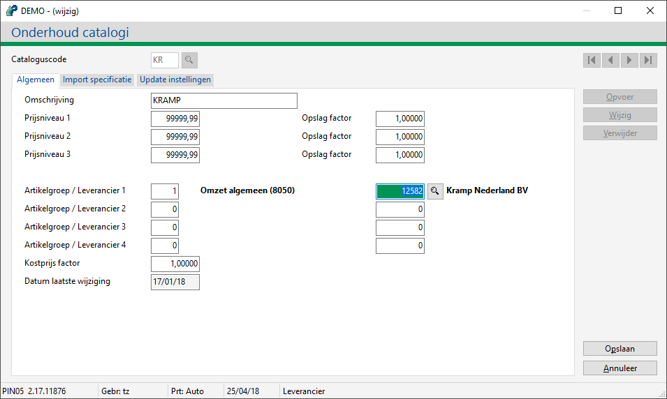

- Login op het Mijn Powerall / klantenportaal en vraag bij Prijslijsten de catalogus aan, zie Mijn Powerall / web portal, Prijslijsten.
In dit hoofdstuk staan diverse vragen over catalogussen.
Ja, het is mogelijk om een eigen bestand te importeren. De inhoud van dit bestand moet dan beschreven zijn.
Ga naar Onderhoud catalogi (AGT).
Voeg de betreffende cataloguscode toe (via Opvoer of Wijzig).
Op tabblad Algemeen vul bij leverancier de betreffende leverancier in.

Opmerking: Koppel de juiste artikelgroep en leverancier aan de catalogus
Kies voor de knop Opslaan.
De catalogus kan gedownload worden.
Gerelateerde onderwerpen
Tip: Gebruik de uitvouw knop  (boven U bent hier:) om alle vragen uit - of in te vouwen.
(boven U bent hier:) om alle vragen uit - of in te vouwen.
Copyright ©